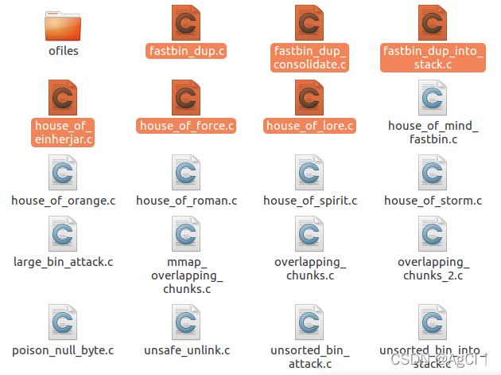
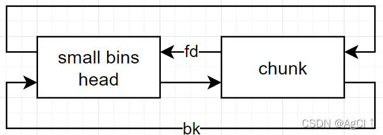

刚刚接触pwn的时候就听说过how2heap的大名，奈何那时懒得搭环境无法真实测试。现在环境已经基本完成搭建，于是对how2heap中的内容进行深入学习并记录笔记，温故而知新。本文是基于对how2heap教学项目中源码的分析与理解而完成的学习笔记。
how2heap下载网址: 传送门
Glibc源码查看网址：传送门
参考书籍：CTF竞赛权威指南-pwn篇
测试环境：Ubuntu 16.04
Glibc版本：Ubuntu GLIBC 2.23-0ubuntu11.3
按照顺序，本文分析glibc 2_23文件夹中的第1~6个源码。

1. fastbin_dup
本程序演示fastbin的double_free漏洞。只需要在两次free中间再进行其他free操作，就可以在fastbin链表中存放两个相同的chunk。这个不难理解。
2. fastbin_dup_consolidate
本程序演示另一种double_free漏洞。在glibc 2.23中，如果fastbin中有chunk存在，那么之后申请一块大于fastbin范围的chunk，会将fastbin中的chunk转移到small bins中。原因如下：
首先fastbin中的chunk会通过malloc_consolidate函数转移到unsorted bins中，之后malloc函数在unsorted bins中查找符合大小的chunk。这时就发现了刚刚被转移过来的小chunk。发现大小不够之后，这些chunk又会被转移到small bins中。（malloc在遍历unsorted bin时会将大小不符合的chunk转移到small bins/large bins中）
此时，fastbin为空，可以将原先在fastbin中的chunk再次free，形成double_free漏洞。
注意：在Glibc 2.23中，malloc只会检查fastbin中是否进行了连续的两次free，而不会将fastbin和其他bins中的chunk整合进行检查。
此时，在fastbins和small bins中就存在两个相同的chunk。
3. fastbin_dup_into_stack
本程序演示double_free漏洞的一种应用，即利用fastbin_dup中的double_free漏洞将堆挟持到栈区，在栈区创建chunk。
首先进行double_free。此时fastbin中的结构为：
fastbin → a → b → a
此时将a分配出来，即可对a的fd指针进行任意写。
注意：fastbin是一个链栈结构，遵循后进先出的规则。因此将a分配出来后fastbin的结构为：
fastbin → b → a
现在，将a中的fd指针更改为栈区某处（这里实际上可以改为任何可写的区域，如bss段等）。将b分配出去，再次分配a后，fastbin中就会有我们自定义的那个地址。
fastbin → <any address we want> → <other things>
再分配相同大小的chunk，就可以将chunk分配到任何可写的地方。
4. house_of_einherjar
本程序演示house of einherjar漏洞。这是一种null off by one漏洞，即仅溢出一个’\x00’字节即可实现任意地址写。原理如下：
首先，需要明确的是，在glibc 2.23 64bit中，如果malloc的大小为0x8 + n*0x10，那么该chunk能够控制下一个chunk的previous size值。因为chunk在64bit中按照0x10对齐（32bit中以0x8对齐），所有chunk的起始地址最低4bit均为0。因此对于分配0x8 + n*0x10的情况，glibc做出的处理是：将后一个chunk的previous size域作为前一个chunk的可用空间。正常情况下，当前一个chunk正在使用时，后一个chunk的previous size不起作用。
在上述的前提条件下，可以任意指定previous size的值，并通过溢出一个’\x00’字节对后面一个chunk的size进行部分修改。
- 如果后面一个chunk的size域最低一字节原来为0x01（1表示prev_in_use标志位，即前面一个chunk正在使用中），溢出后变为0x00。假设后一个chunk的地址为x，需要写的地址为y。那么应将后一个chunk的prev_size改为x-y。这样在free后面一个chunk时，malloc_consolidate函数会进行chunk的合并，将chunk头的地址当做y。
注意：这里不会进行整型溢出的检查，因此x<y也是可行的，此时x-y是一个很大的数。
- 如果后面一个chunk的size域最低一字节原来不是0x01而是0x?1，那么溢出一个空字符后，chunk的size会被改变。如果此时不加任何其他处理，在chunk与top chunk合并时会出错。原理：
_int_free函数中判断后一个chunk是通过size偏移确定的，如果size被改变且没有在后面伪造chunk，在_int_free函数中有一项检查是后一个chunk的prev_in_use是否为1。很显然正常情况下这里都是1，因为没有free之前前一个chunk正在使用，因此如果此时后一个chunk的prev_in_use位为0说明堆结构被篡改。
重要：_int_free中的检查项目（部分）
- 检查相邻chunk是否相等，是则为double free
1 | if(__builtin_expect (old == p, 0)) |
- 检查该chunk是否为top chunk，top chunk不可被free
1 | if (__glibc_unlikely (p == av->top)) |
- 检查该chunk是否超过了arena的范围
1 | if (__builtin_expect (contiguous (av) |
- 检查紧跟该chunk后面（高地址处）的prev_in_use位是否为1
1 | if (__glibc_unlikely (!prev_inuse(nextchunk))) |
- 检查紧跟该chunk后面的size是否合理（不能过小或过大）
1 | nextsize = chunksize(nextchunk); |
笔记：free调用时会调用malloc_consolidate函数整理fastbins。对于fastbins中的chunk先向低地址合并再向高地址合并。这一步操作在最后完成
- 因此后面一个chunk的size域最低一字节原来不是0x01而是0x?1时，需要在对应的位置伪造一个chunk，将损失的size大小补齐，来绕过检查。后面的效果与第一种情况相同。
5. house_of_force
本程序演示house_of_force漏洞。这个漏洞的思路比较简单，利用了top chunk。
在glibc 2.23中，malloc不会对top chunk的size进行检查，因此如果能够将top chunk的size修改为很大，就可以malloc任意大小的chunk，从而在任意地址写。
注意：malloc不检查整型溢出。如果需要写的地址在top chunk的低地址处，也可以通过整型溢出到达。
假设top chunk头的地址为x，要写的地址为y。那么首先malloc大小为x-y大小的堆块，然后再malloc一下即可对该地址写。注意前面的prev_size和size，必要时需要分配x-y-0x10（32bit为x-y-0x8）大小堆块以实现对目标地址的完全控制。
6. house_of_lore
本程序演示house_of_lore漏洞，这是一种利用small_bins的攻击方式。
small bins/large bins/unsorted bins的双向链表结构如下图所示

同unsorted bin类似，small bin也类似于链栈结构，但是双向链表。将small bins中位于链尾的chunk的bk指针修改为想要写的地址，在small bin中的chunk被分配完之后，再次分配就能在该地址创建chunk。
但是在目标地址处还需要进行一些预处理工作。由于glibc的检查机制，导致直接挟持堆不可行。
下面是_int_malloc函数中查找small bins片段的代码：
1 | if (in_smallbin_range (nb)) |
其中有一个明显的检查是__glibc_unlikely (bck->fd != victim)，它检查要分配的chunk的bk指向的chunk中的fd指针是否是这个chunk。由于我们要分配的是一个假的chunk，因此需要提前设置好这个假chunk的bk指针，以及bk指针指向的另外一处假chunk中fd指针的值，保证二者正确。为了保证结果正确，如果在假chunk之前分配的chunk地址已知，可以将这个地址写入假chunk的fd指针中以使得双向链表完整。当然就上述代码来看这里不设置应该也是可以的。
注意：这里的检查并未涉及prev_size和size，因此这二者的值对于假chunk的分配没有影响。原演示文件中将这两个值均设为0。
因此总结一下，如果需要写入的地址为x，那么需要将small bins中最后一个chunk的bk指针改为x-0x20（如果写入垃圾数据无妨，可以将这个地址再适当下压一些，如x-0x30，这就需要写入0x10字节的垃圾数据），并且需要在x-0x8处（对应bk）写入另一个地址y，在y+0x10处（对应fd）需要写入x-0x20。故实现该漏洞不仅需要能够在可写地址的低地址方向某处一个8字节区域可写，并且需要另一处8字节区域可写。（需要的两处可写的地方即为下表中标红的地方）
| addr | +0x0 | +0x8 |
|---|---|---|
| x-0x20 | prev_size | size |
| x-0x10 | DEADBEEF | addr_y |
| … | … | … |
| y | prev_size | size |
| y+0x10 | addr_x-0x20 | DEADBEEF |